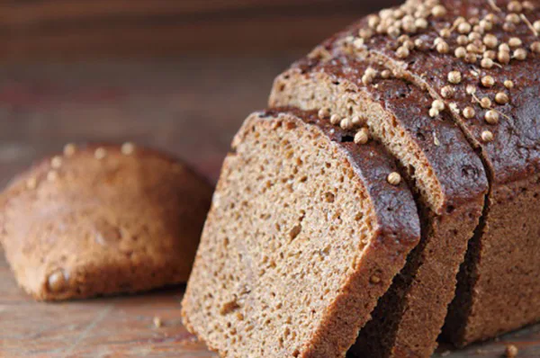

Бородинский хлеб
Известному молодому генералу Александру Тучкову, который жил в
России, предсказали гибель в загадочной точке земного шара под названием «Бородино».
Несмотря на то, что Тучков просмотрел с женой всю карту земного шара,
он нашёл только одно место с подобным названием, и оно находилось на
Апеннинском полуострове. Тогда генерал обрадовался, так как решил, что,
если Россия с Италией не находятся во враждебных отношениях, то и смерть
ему не грозит. Он даже и не думал, что в России существует небольшая деревня
с точно таким же названием, которая и определит в будущем его судьбу.
Несчастная жена Тучкова, Маргарита Нарышкина, очень любила мужа и даже пошла
наперекор своей родне, которая признала её супруга только спустя четырёх лет их
совместной жизни, после того, как её муж и сын погибли на Бородинском поле, постриглась
в монахини, изменив имя и став сестрой Марией. Именно Мария с другими монашками
и придумали тот самый бородинский хлеб. Некоторые даже считают, что женщина
кинула в печь хлеб, желая, чтобы он стал таким же чёрным, как её скорбь по умершим.
Долгое время бородинский хлеб использовался в качестве поминального блюда, став
символом погибших в 1812 году. Интересно, что, если присмотреться к упаковке современного
Бородинского хлеба, то станет заметно, что на ней изображены как раз наполеоновские солдаты, а не воины российской армии.